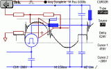
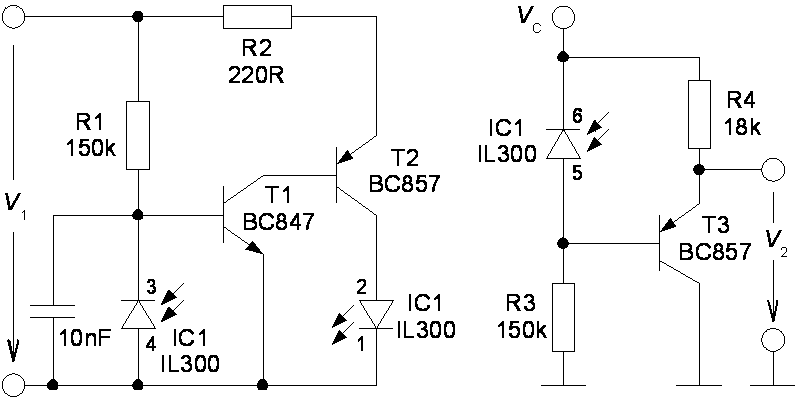
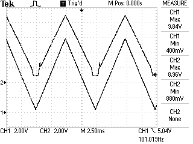
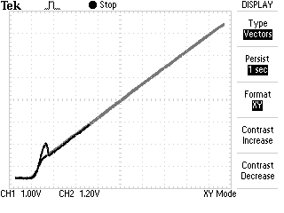

|  Electrotechnics | Signal Powered Linear Optocoupler | www.e-rokodelnica.si |
In this article, a circuit is presented, that enables us to control a device with a DC voltage over an insulation barrier. Often, the barrier is a must because of safety issues. Sometimes, we must connect electrical circuits that are referenced to different potential or the barrier only breaks a current loop. The control signal is a DC voltage in a range from 0V up to 10V. The low part from 0V to approximately 2V of the range means, that the controlled device is off. This way, we prevent the device to be switched-on by noise. When the input voltage reaches an on-threshold at 2V, the device switches on. Above the on-threshold, the transfer characteristics must as linear as possible.
The circuit is built around a linear optocoupler. Beside optocoupler, it comprises three bipolar transistors, a capacitor and some resistors. A necessary power for circuit to operate is taken from input signal. Because of low count of parts, the circuit is cheap and also reliable.
The goals in the introduction of article can be achieved by a linear optocoupler. By now, I have met two such devices. One is IL300 [2] and second are HCNR200 or HCNR201 [3]. These optocouplers comprise a LED and photodiode in an emitting side. An identical photodiode is in a receiving side of the optocoupler. Because of such construction, light emitted from LED should cause the same current in both photodiodes. The current through the photodiode in the receiving side (IC1, pins 6-5) is the output current, which must be set in proportion to the input V1. This current equals the current through the photodiode in the transmitting side (IC1 pins 3-4). Around the emitting side of the optocoupler we build a feedback loop that keeps the current through the photodiode in the transmitting side in the proportion to the signal V1. While currents through both photodiodes are equal, we have the output current proportional to the signal V1.
There are many examples of such circuits in [2] and [3]. But in these examples, the hidden cost is a power supply. We must provide some power to both sides of the signal path. In datasheets and application notes, there are schematics with opAmps with power pins hidden! The exception is a loop powered insulation of 4-20mA current loop [3]. The essence of this design idea is to use power from signal voltage V1 to supply feedback loop in the transmitting side.

Figure 1: Schematics
In the transmitting side, there is a feedback loop consisted out of the LED, transistors T1, T2 and photodiode. First, there is no light emitted and there is no current through photodiode. The voltage V1 causes current through R1. The entire current flows into T1 which opens. The T1 opens T2 and LED starts to emit light. Because of that, part of current into the base of T1 is redirected through the photodiode which now conducts. Both the T1 and T2 close a bit. When the components were selected properly, the feedback loop would stabilize. The current through R1 equals current through R3 and both currents a proportional to V1.
The detailed description can be found in [1].
The schematics on Figure 1 has been built. Here are two snapshots that prove the reasoning above. A triangle voltage is connected to the input V1. This voltage is the lower trace on Figure 2. An offset is set so that voltage changes between zero and 10V. Frequency is 100Hz.

Figure 2: Oscilogram: V1 – trace 1, V2 – trace 2
In Figure 2, the upper trace is output voltage V2. We can see that some voltage V1 is needed for circuit to start operating and that the output voltage starts to follow the input.

Figure 3: Oscilogram: V1 – x-axis, V2 – y-axis
The traces from the Figure 2 are presented in xy format in the Figure 3. The characteristics above the on-threshold is quite linear.
| [1] | Signal-powered linear optocoupler provides isolated control signal, Design Ideas, EDN Magazine, www.edn.com, July 23, 2009. |
||
| [2] | Vishay Semiconductor, IL300 Linear Optocoupler, High Gain Stability, Wide Bandwidth, Datasheets, www.vishay.com. |
||
| [3] | Avago Technologies, HCNR200 and HCNR201, High-Linearity Analog Optocouplers, Datasheets, www.avagotech.com. |